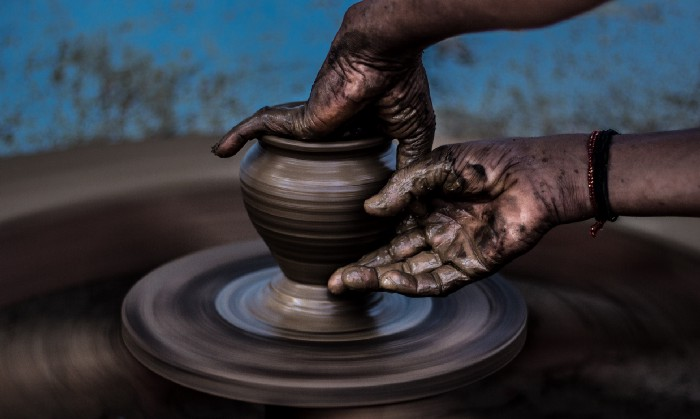

Negara Kesatuan Republik Indonesia (NKRI)
Indonesia, disebut juga RI (Republik Indonesia), atau NKRI (Negara Kesatuan Republik Indonesia) adalah negara di Asia Tenggara yang dilintasi garis khatulistiwa dan berada di antara benua Asia dan Australia, serta antara samudera pasifik dan hindia. Indonesia adalah negara kepulauan terbesar di dunia yang terdiri dari 17.504 pulau. Nama alternatif yang biasa dipakai adalah Nusantara. Dengan populasi hampir 270.054.853 jiwa pada tahun 2018, indonesia adalah negara berpenduduk terbesar keempat di dunia dan negara yang berpenduduk Muslim terbesar di dunia dengan lebih 230 juta jiwa.
Bentuk negara indonesia adalah negara kesatuan dan bentuk pemerintahan indonesia adalah republik, dengan Dewan Perwakilan Rakyat, Dewan Perwakilan Daerah, Presiden yang dipilih secara langsung.
Ibukota negara indonesia adalah jakarta. Indonesia berbatasan darat dengan Malaysia di pulau Kalimantan dan pulau Sebatik, dengan Papua Nugini di pulau Papua, dan dengan Timor Leste di pulau Timor. Negara tetangga lainnya adalah Singapura, Filipina, Australia, dan Wilayah Persatuan kepulauan Andaman dan Nikobar di India.